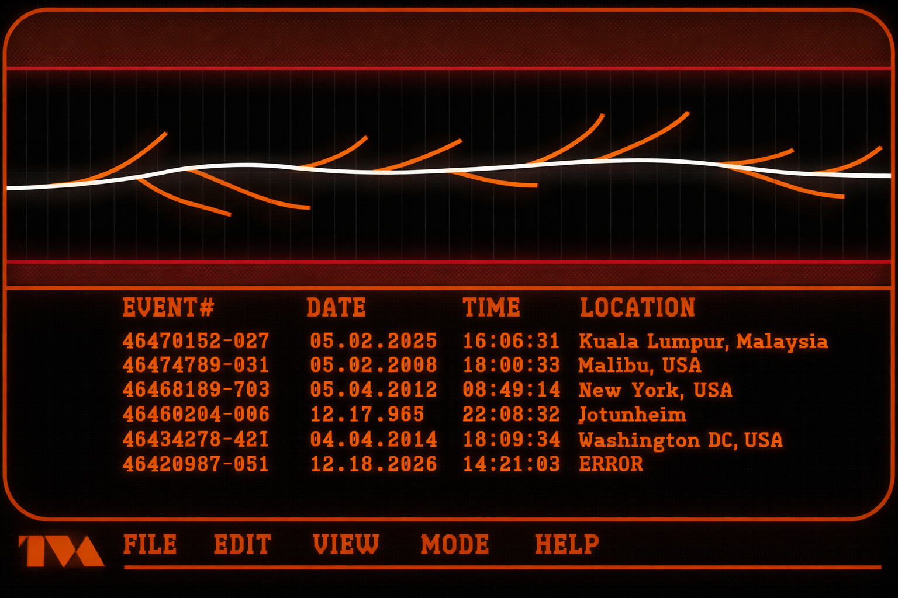

BRANCH ANALYSIS
Monitoring Variant Activity


Temporal Archive Entry

Variant Event Logged

Timeline Divergence

Branch Expansion

Field Observation

Nexus Event

Variant Contained

Sacred Timeline

Chrono Displacement

Field Log Entry

Temporal Survey

Monitoring Sequence

Variant Signal

Time Stream Node

Chrono Archive

Branch Nexus

Variant Report

Temporal Activity

Field Record

Sacred Timeline Sync

Variant Alert

End of Log